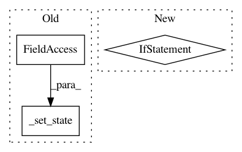

c4d653ee7275f364b82d539bc58a9793248374eb,lib/streamlit/ScriptRunner.py,ScriptRunner,request_stop,#ScriptRunner#,109
Before Change
if self.is_fully_stopped():
pass
else:
self._set_state(State.STOP_REQUESTED)
self._state_change_requested = True
def request_pause_unpause(self):
if self._state == State.PAUSED:
After Change
self._event_queue.enqueue(ScriptEvent.RERUN, self._report)
def request_stop(self):
if self.is_shutdown():
LOGGER.warning("Discarding STOP event after shutdown")
return
self._event_queue.enqueue(ScriptEvent.STOP)
def request_shutdown(self):
if self.is_shutdown():
In pattern: SUPERPATTERN
Frequency: 3
Non-data size: 3
Instances
Project Name: streamlit/streamlit
Commit Name: c4d653ee7275f364b82d539bc58a9793248374eb
Time: 2019-06-05
Author: tconkling@gmail.com
File Name: lib/streamlit/ScriptRunner.py
Class Name: ScriptRunner
Method Name: request_stop
Project Name: streamlit/streamlit
Commit Name: 9f1aecdae6c3405f745e2f3e671b3f165aceb742
Time: 2019-08-06
Author: tconkling@gmail.com
File Name: lib/streamlit/ScriptRunner.py
Class Name: ScriptRunner
Method Name: _run_script
Project Name: streamlit/streamlit
Commit Name: c4d653ee7275f364b82d539bc58a9793248374eb
Time: 2019-06-05
Author: tconkling@gmail.com
File Name: lib/streamlit/ScriptRunner.py
Class Name: ScriptRunner
Method Name: request_rerun